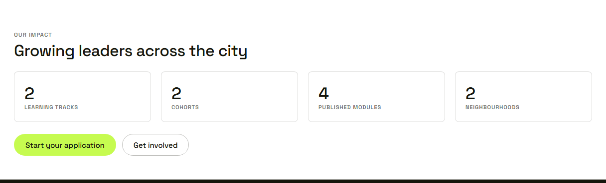

Waypoint · Video 019
The journey and impact on the home page
What happens if I join, and does it work
The home page
Apply now, or explore the programs
Four steps, start to graduation
Apply, join, learn, lead
Impact numbers

Counts of the program, not of young people
Things to remember
- Four steps, from apply to graduate
- Counts of tracks, cohorts, modules and neighbourhoods
- Never counts of individual youth
- Open to anyone, with no sign in